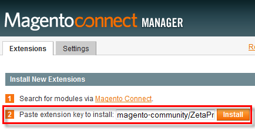
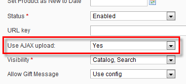
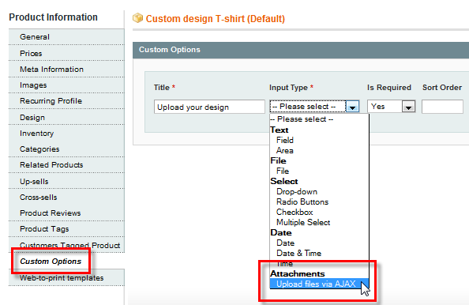
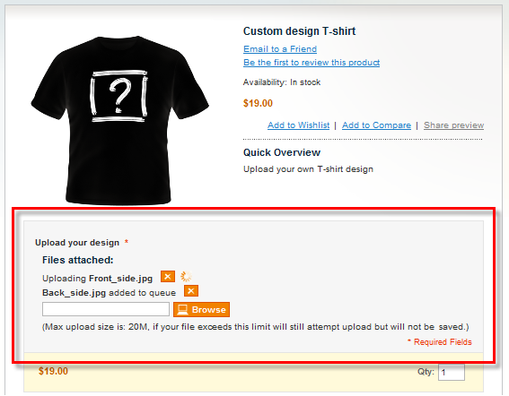

<?xml version="1.0" encoding="UTF-8"?><rss version="2.0"
	xmlns:content="http://purl.org/rss/1.0/modules/content/"
	xmlns:wfw="http://wellformedweb.org/CommentAPI/"
	xmlns:dc="http://purl.org/dc/elements/1.1/"
	xmlns:atom="http://www.w3.org/2005/Atom"
	xmlns:sy="http://purl.org/rss/1.0/modules/syndication/"
	xmlns:slash="http://purl.org/rss/1.0/modules/slash/"
	>

<channel>
	<title>Queue &#8211; Magento web-to-print &amp; dynamic imaging</title>
	<atom:link href="http://www.zetaprints.com/magentohelp/tag/queue/feed/" rel="self" type="application/rss+xml" />
	<link>http://www.zetaprints.com/magentohelp</link>
	<description>Just another WordPress site</description>
	<lastBuildDate>Fri, 07 Jun 2013 06:55:21 +0000</lastBuildDate>
	<language>en-US</language>
	<sy:updatePeriod>hourly</sy:updatePeriod>
	<sy:updateFrequency>1</sy:updateFrequency>
	<generator>https://wordpress.org/?v=4.4.1</generator>
	<item>
		<title>Dynamic File Attachments extension</title>
		<link>http://www.zetaprints.com/magentohelp/dynamic-file-attachments/</link>
		<pubDate>Fri, 10 Dec 2010 09:29:23 +0000</pubDate>
		<dc:creator><![CDATA[atanas]]></dc:creator>
				<category><![CDATA[Dynamic attachments plugin]]></category>
		<category><![CDATA[Asynchronous]]></category>
		<category><![CDATA[File upload]]></category>
		<category><![CDATA[Queue]]></category>

		<guid isPermaLink="false">http://ec2-174-129-95-130.compute-1.amazonaws.com/magentohelp/?p=12109</guid>
		<description><![CDATA[This extension is no longer supported. Dynamic File Attachments is a free Magento extension that allows asynchronous file uploading on product page. Some products require arbitrary number of files to be uploaded by customers. The actual number of files and their size may vary between different orders, so it is not practical to adding multiple [&#8230;]]]></description>
				<content:encoded><![CDATA[<h4><span style="color: #ff0000;">This extension is no longer supported.</span></h4>
<p><a title="Magento Dynamic file attachments extension" href="https://www.magentocommerce.com/magento-connect/dynamic-file-attachments.html" target="_self">Dynamic File Attachments</a> is a free Magento extension that allows asynchronous file uploading on product page. <span id="more-12109"></span></p>
<p>Some products require arbitrary number of files to be uploaded by customers. The actual number of files and their size may vary between different orders, so it is not practical to adding multiple file uploading controls. This extension allows uploading multiple files in a convenient asynchronous queue. Try it on a <a title="Magento dynamic file attachments demo product" href="../../../../magento/index.php/featured/dynamic-file-attachments.html" target="_self">demo product</a>.</p>
<h2>Features</h2>
<p>Our extension can come in handy in lots of different scenarios, featuring:</p>
<ul>
<li>Multiple file uploading on a single custom product option;</li>
<li>Upload files as you go, stack them up in a queue and let the extension upload the one by one automatically;</li>
<li>Display list of uploaded files;</li>
<li>Show the list of uploaded files to the customer as plain text (no download links),</li>
<li>Display links to uploaded files so that admins can download and use files from order details page in Magento admin panel.</li>
</ul>
<p>Some of your customers might prefer designing their own print products rather than <a title="Magento web-to-print interactive personalization" href="../../../../magento-web-to-print/magento-interactive-personalization/" target="_self">personalizing</a> a template from your catalogs. As a <a title="Web-to-print printers" href="../../../../category/printers/" target="_self">printer</a>, you can give your customers this option and allow them to upload their own print-ready files for you to print.</p>
<h2>Extension installation</h2>
<p>The installation process is identical to all other extension installations.</p>
<div style="display: table;">
<p></p>
<div style="position: relative; top: 15px; display: inline;">
<p>Get the installation key from <a title="Magento Dynamic file attachments extension" href="https://www.magentocommerce.com/magento-connect/dynamic-file-attachments.html" target="_self">extension</a> page on Magento eCommerce, paste it in the corresponding field of <em>Magento Connect Manager</em> and hit <strong>Install. </strong></p>
<p>You may need to log out of the admin area and then log in again to see all pages of the extension. The pages may still be unavailable if you admin path is other than /admin/.<strong><br />
</strong></p>
</div>
</div>
<p>&nbsp;</p>
<p><strong>Note.</strong> You must also allow write access to the <em>/media/</em> folder of your Magento installation for the extension to work properly.</p>
<h2>Set up</h2>
<p>The extension adds an extra field in the <strong>General</strong> tab of the <em>Product information</em> page in Magento admin panel.</p>
<div style="display: table;">
<p></p>
<div style="position: relative; top: 15px; display: inline;">To enable the file uploading custom option on a product, choose <strong>Yes</strong> for the <strong>Use AJAX upload</strong> field.</div>
</div>
<p>This results in an extra <strong>custom option</strong> for the product visible under <em>Input type</em> drop-down menu.</p>
<p></p>
<h2>Front end</h2>
<p>Customers will see file uploading option on product page in the front end. They are able to stack multiple files in a queue and let the extension upload them automatically.</p>
<p></p>
<p>While the files are being uploaded, the <strong>Add to Cart</strong> button is temporarily disabled. Customers won&#8217;t be able to add the product to cart until all files in the queue finish uploading.</p>
<h2>Compatibility</h2>
<p>Installing this extension in your Magento store results in a few compatibility issues that you should be aware of.</p>
<ul>
<li>Magento native file uploading option will not function correctly and needs to be replaced with the AJAX file upload option as explained above.</li>
<li>Access to old files that were uploaded before the extension was installed using Magento native file uploading option, is disabled.</li>
</ul>
<h3>Product type compatibility</h3>
<p>There are a few different <a title="Magento product types" href="http://www.magentocommerce.com/wiki/modules_reference/english/mage_adminhtml/catalog_product/producttype" target="_self">product types</a> in Magento. Our <a title="Magento Dynamic file attachments extension" href="https://www.magentocommerce.com/magento-connect/dynamic-file-attachments.html" target="_self">Dynamic File Attachments</a> extension supports:</p>
<ul>
<li>Simple products</li>
<li>Virtual products</li>
<li>Configurable products</li>
</ul>
<h2>Links</h2>
<ul>
<li><a title="Dynamic file attachment extension overview" href="../../../../magento-web-to-print/dynamic-file-attachments/" target="_self">Extension overview</a></li>
<li><a title="Dynamic file attachment extension source code" href="http://code.google.com/p/magento-w2p/source/browse/#svn%2Fbranches%2FZetaPrints_Attachments" target="_self">Source code</a></li>
<li><a title="Dynamic file attachment extension issue list" href="http://code.google.com/p/magento-w2p/issues/list" target="_self">Issues</a></li>
</ul>
]]></content:encoded>
			</item>
	</channel>
</rss>

<!-- Localized -->